<html>
<head>

    <meta http-equiv="Content-Type" content="text/html; charset=utf-8" />
    <meta http-equiv="Content-Style-Type" content="text/css" />

    <script type="text/javascript" src="./vendor/javascripts/jquery.js"></script>
    <script type="text/javascript" src="./vendor/javascripts/template.js"></script>
    <script type="text/javascript" src="./vendor/javascripts/ember.js"></script>
    <script type="text/javascript" src="./vendor/javascripts/highlight.js"></script>
    <script type="text/javascript" src="./assets/javascripts/application.js"></script>

    <link rel="stylesheet" href="./vendor/stylesheets/bootstrap.css" />
    <link rel="stylesheet" href="./vendor/stylesheets/highlight.css" />
    <link rel="stylesheet" href="./vendor/fonts/css/font-awesome.css" />
    <link rel="stylesheet" href="./assets/stylesheets/application.css" />

    <title>KochAG Matrix Projekt</title>
</head>
<body>

    <script type="text/x-handlebars" id="application">
        <header>
            <div class="pull-right download-area">
                <p>Current version: <strong>0.9</strong></p>
                <p>
                    <i class="fa fa-github"></i> <a href="#">Source code</a><br />
                    <i class="fa fa-download"></i> <a href="#">Download code</a>
                </p>
            </div>

            <h1><a href="http://kochag.ch">KO(H</a></h1>
            <h2>{{#link-to 'index'}}Matrix Projekt{{/link-to}}</h2>
        </header>

        <div id="wrapper" class="row">
            <section id="sidebar" class="col-md-3">

                <div class="panel panel-default navigation-category">
                    <div class="panel-heading navigation-heading">
                        <div class="pull-right"><i class="fa fa-book"></i></div>
                        <h3 class="panel-title">Übersicht</h3>
                    </div>
                    <div class="panel-body navigation-body">
                        <div class="panel-link navigation-link">
                            {{#link-to 'index'}} Projektinformationen{{/link-to}}
                        </div>
                    </div>
                </div>

                
                <div class="panel panel-default navigation-category">
                    <div class="panel-heading navigation-heading">
                        <div class="pull-right"><i class="fa fa-wrench"></i></div>
                        <h3 class="panel-title">Hardware</h3>
                    </div>
                    <div class="panel-body navigation-body">
                        <div class="panel-link navigation-link">
                            {{#link-to 'hardware-case'}} Gehäuse und Speisung{{/link-to}}
                        </div>
                        <div class="panel-link navigation-link">
                            {{#link-to 'hardware-print'}} Print Übersicht{{/link-to}}
                        </div>
                        <div class="panel-link navigation-link">
                            {{#link-to 'hardware-partlist'}} Print Stückliste{{/link-to}}
                        </div>
                        <div class="panel-link navigation-link">
                            {{#link-to 'hardware-documentation'}} Schema & Bestückungsplan{{/link-to}}
                        </div>
                    </div>
                </div>


                <div class="panel panel-default navigation-category">
                    <div class="panel-heading navigation-heading">
                        <div class="pull-right"><i class="fa fa-code"></i></div>
                        <h3 class="panel-title">Software</h3>
                    </div>
                    <div class="panel-body navigation-body">
                        <div class="panel-link navigation-link">
                            {{#link-to 'software-installation'}}Installation{{/link-to}}
                        </div>
                        <div class="panel-link navigation-link">
                            {{#link-to 'software-examples'}}Beispiele{{/link-to}}
                        </div>
                        <div class="panel-link navigation-link">
                            {{#link-to 'software-documentation'}}Dokumentation{{/link-to}}
                        </div>
                    </div>
                </div>
            </section>

            <div class="col-md-1 spacer">&nbsp;</div>

            <section id="content" class="col-md-8">
                {{outlet}}
            </section>
        </div>

        <footer>
            <div class="pull-right">
                <span class="copyright">&copy; 2015 <a href="http://kochag.ch">René Koch AG</a></span>
            </div>
            <span class="contact">Kontakt <a href="#">bmarty@kochag.ch</a></span>
        </footer>
    </script>


    <script type="text/x-handlebars" id="index">
        <h1>Projektinformationen</h1>
        <p>
            Das Matrix Projekt ist ein einfaches Eleketronikprojekt, das von der René
            Koch AG während der Schnupperlehre zusammen mit den teilnehmenden Schnupperlehrlingen
            gefertigt wird. Die Software des Projektes basiert auf dem offenen Arduino System,
            mit dem es möglich ist, das Gerät auch nach der Schnupperlehre Zuhause oder in der 
            Schule einfach neu zu programmieren und weiter zu verwenden.
        </p>
        <p>
            Das Ziel dieses Projektes ist, ein Gerät zu erstellen, das nicht nur während der Schnupperlehre 
            verwendet werden kann, sondern auch danach weiterhin einen produktiven Nutzen bietet.
            Grundsätzlich handlet es sich dabei um eine LED-Matix aus (bis zu) 64 LEDs die Softwareseitig
            komplett frei angesteuert werden können.
        </p>
        <p>
            Zusätzlich beinhaltet die Projekthardware noch ein Potentiometer, drei Buttons und ein 
            Accelerometer (Beschleunigungssensor), die über die Software ausgelesen und für eigene Anwendungen
            genutzt werden können.
        </p>

        <h3>Diese Dokumentation</h3>
        <p>
            Bei dieser Dokumentation handelt es sich um eine öffentliche Projektdokumentation. Das Projekt
            sollte mit den hier gegeben Informationen selbstständig zu bauen, warten oder programmieren sein.
            Die Dokumentation beinhaltet detailierte Informationen zur Software, um das Programmieren des
            Gerätes so einfach wie möglich zu gestalten.
        </p>
        <p>
            Das Matrix-Projekt befindet sich im Moment noch in einer sehr frühen Entwicklungsphase, folgende
            Teile der Dokumentation sind im Moment nocht nicht, oder noch nicht vollständig vorhanden: 
            <em>Gehäuse und Speisung</em>, <em>Print Übersicht</em>, <em>Software Dokumentation</em>
        </p>
    </script>


    <script type="text/x-handlebars" id="hardware-case">
        <p>
            Das Gerät kann entweder über Kabel oder Hohlbuchse mit <strong>7V - 20V</strong>
            oder über ein USB-B Kabel direkt vom PC gespiesen werden.
        </p>
        <h3>Aktuelle Gehäuseversion</h3>
        
    </script>


    
    <script type="text/x-handlebars" id="hardware-print">
        
        
    </script>


    
    <script type="text/x-handlebars" id="hardware-partlist">
        <h1>Hardware - Stückliste</h1>
        <p>
            Die folgende Stückliste beinhaltet alle Bauteile, die benötigt werden um den Matrix Print
            vollständig und funktionsfähig zu bestücken.
        </p>
        <table class="table table-striped">
            <tbody>
                <tr>
                    <td><strong>Pos.</strong></td>
                    <td><strong>Anz.</strong></td>
                    <td><strong>Name</strong></td>
                    <td><strong>Wert</strong></td>
                    <td><strong>Gehäuse</strong></td>
                </tr>
                <tr>
                    <td>1</td>
                    <td>3</td>
                    <td>C1,C5,C7</td>
                    <td>100nF</td>
                    <td>4X8R5,08</td>
                </tr>
                <tr>
                    <td>2</td>
                    <td>2</td>
                    <td>C2,C3</td>
                    <td>22pF</td>
                    <td>6X3R5,08</td>
                </tr>
                <tr>
                    <td>3</td>
                    <td>2</td>
                    <td>C4,C6</td>
                    <td>10µF</td>
                    <td>D4R2,54_E/LrO</td>
                </tr>
                <tr>
                    <td>4</td>
                    <td>8</td>
                    <td>C8, C10, C11, C12, C13, C14, C15, C16</td>
                    <td>100nF</td>
                    <td>0805</td>
                </tr>
                <tr>
                    <td>5</td>
                    <td>1</td>
                    <td>C9</td>
                    <td>4.7µF</td>
                    <td>0805</td>
                </tr>
                <tr>
                    <td>6</td>
                    <td>1</td>
                    <td>C17</td>
                    <td>10µF</td>
                    <td>D6R2, 54_E/LrO</td>
                </tr>
                <tr>
                    <td>7</td>
                    <td>64</td>
                    <td>D1-D64</td>
                    <td>FR1101F</td>
                    <td>1206-D</td>
                </tr>
                <tr>
                    <td>8</td>
                    <td>1</td>
                    <td>D65</td>
                    <td>1N4007</td>
                    <td>D_RM12, 7_D/Mr</td>
                </tr>
                <tr>
                    <td>9</td>
                    <td>1</td>
                    <td>D67</td>
                    <td>MBR0520</td>
                    <td>SOD323</td>
                </tr>
                <tr>
                    <td>10</td>
                    <td>1</td>
                    <td>IC1</td>
                    <td>ATMEGA328P</td>
                    <td>DIL28S</td>
                </tr>
                <tr>
                    <td>11</td>
                    <td>1</td>
                    <td>IC2</td>
                    <td>PCF8574</td>
                    <td>DIL16</td>
                </tr>
                <tr>
                    <td>12</td>
                    <td>2</td>
                    <td>IC3, IC4</td>
                    <td>TPIC6B595N</td>
                    <td>DIL20</td>
                </tr>
                <tr>
                    <td>13</td>
                    <td>1</td>
                    <td>IC5</td>
                    <td>LM1117MPX-3.3</td>
                    <td>SOT223</td>
                </tr>
                <tr>
                    <td>14</td>
                    <td>1</td>
                    <td>IC6</td>
                    <td>MC78M05CDTG</td>
                    <td>TO252/Ar </td>
                </tr>
                <tr>
                    <td>15</td>
                    <td>1</td>
                    <td>K1</td>
                    <td>FT232RL</td>
                    <td>SSOP28</td>
                </tr>
                <tr>
                    <td>16</td>
                    <td>63</td>
                    <td>K2, K3, K4, K5, K6, K16</td>
                    <td>ANSCH.KLEMME_ P3</td>
                    <td>ANSCH.KLEMM/Er3</td>
                </tr>
                <tr>
                    <td>17</td>
                    <td>2</td>
                    <td>K7, K10</td>
                    <td>K2X03</td>
                    <td>2X03</td>
                </tr>
                <tr>
                    <td>18</td>
                    <td>1</td>
                    <td>K8</td>
                    <td>USB-B-PRINT</td>
                    <td>USB-B-PRI/Nr </td>
                </tr>
                <tr>
                    <td>19</td>
                    <td>1</td>
                    <td>K9</td>
                    <td>ANSCH.KLEMME_ P2</td>
                    <td>ANSCH.KLEMM/Er2</td>
                </tr>
                <tr>
                    <td>20</td>
                    <td>1</td>
                    <td>K11,  K12</td>
                    <td>K1X04</td>
                    <td>1X04</td>
                </tr>
                <tr>
                    <td>22</td>
                    <td>6</td>
                    <td>K14, K17, K18</td>
                    <td>JUMPER2</td>
                    <td>1/Xr2</td>
                </tr>
                <tr>
                    <td>23</td>
                    <td>1</td>
                    <td>Q1</td>
                    <td>16MHz</td>
                    <td>HC49/U</td>
                </tr>
                <tr>
                    <td>24</td>
                    <td>11</td>
                    <td>R1, R2, R3, R20, R21, R22, R23, R24, R25, R26, R27</td>
                    <td>1K</td>
                    <td>0207</td>
                </tr>
                <tr>
                    <td>25</td>
                    <td>9</td>
                    <td>R4, R5, R6, R9, R10, R11, R36, R37, R40</td>
                    <td>10K</td>
                    <td>0207</td>
                </tr>
                <tr>
                    <td>26</td>
                    <td>11</td>
                    <td>R7, R8, R12, R13, R14, R15, R16, R17, R18, R19, R38</td>
                    <td>10K</td>
                    <td>0805</td>
                </tr>
                <tr>
                    <td>27</td>
                    <td>8</td>
                    <td>R28, R29, R30, R31, R32, R33, R34, R35</td>
                    <td>150R</td>
                    <td>0805</td>
                </tr>
                <tr>
                    <td>28</td>
                    <td>1</td>
                    <td>R39</td>
                    <td>1K</td>
                    <td>0805</td>
                </tr>
                <tr>
                    <td>29</td>
                    <td>1</td>
                    <td>R41</td>
                    <td>10k</td>
                    <td>POTI_SMC-10/-r</td>
                </tr>
                <tr>
                    <td>30</td>
                    <td>1</td>
                    <td>S1</td>
                    <td>Taster_Kurzhub</td>
                    <td>TASTER_KURZHUB</td>
                </tr>
                <tr>
                    <td>31</td>
                    <td>8</td>
                    <td>T1, T2, T3, T4, T5, T6, T7, T8</td>
                    <td>BC327/16</td>
                    <td>TO92</td>
                </tr>
                <tr>
                    <td>32</td>
                    <td>2</td>
                    <td>T9, T10</td>
                    <td>BSS138</td>
                    <td>SOT23</td>
                </tr>
                <tr>
                    <td>33</td>
                    <td>1</td>
                    <td>X3</td>
                    <td>JACK-PLUG0</td>
                    <td>DC10L</td>
                </tr>
                <tr>
                    <td>34</td>
                    <td>1</td>
                    <td>X4</td>
                    <td>MMA8452Q</td>
                    <td>QFN-16_0.5MM</td>
                </tr>
            </tbody>
        </table>
    </script>


    

    <script type="text/x-handlebars" id="hardware-documentation">
        <h1>Hardware - Technische Unterlagen</h1>
        <h3>Bestückungsplan Print</h3>
        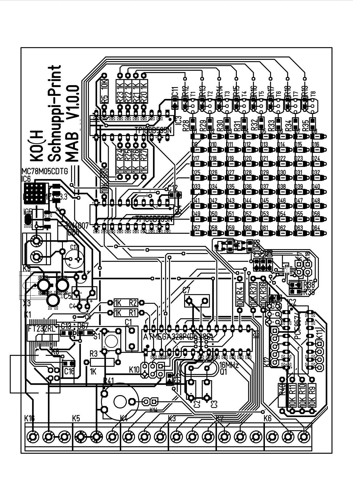

        <h3>Schema Seite 1</h3>
        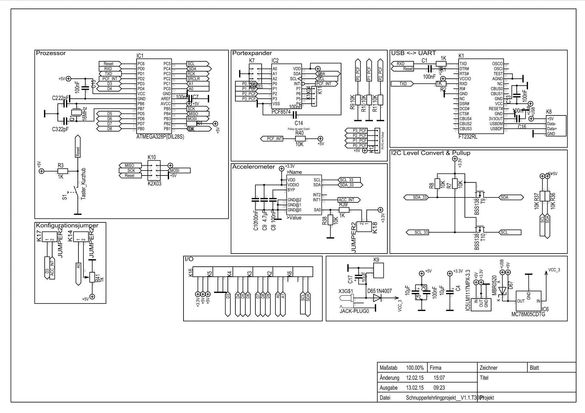

        <h3>Schema Seite 2</h3>
        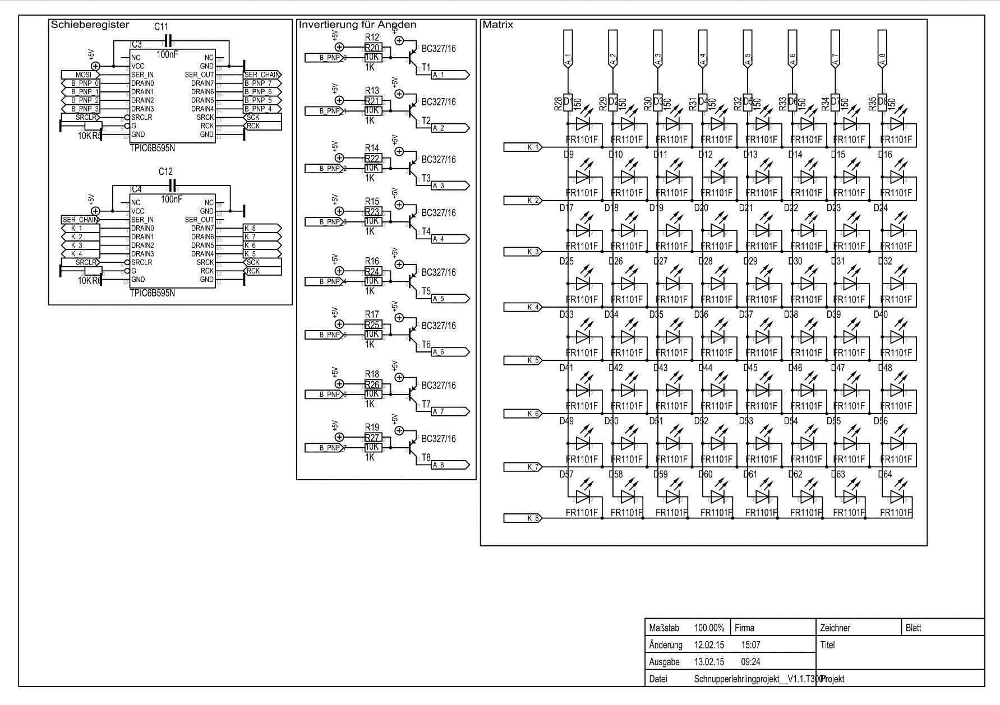
    </script>


    
    <script type="text/x-handlebars" id="software-installation">
        <h1>Software - Installation</h1>
        Das Matrix Projekt kann jederzeit einfach mit der Arduio-IDE neu programmiert werden.
        Alles was dazu gebraucht wird, ist ein Windows PC, ein USB-B Kabel und das Matrix 
        Gerät an sich.

        <h3>Installation der Software</h3>
        <table class="table table-striped">
            <tbody>
                <tr><td>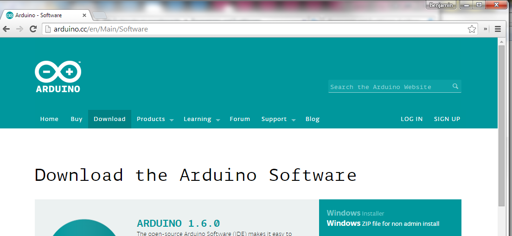</td><td>
                    Um ein Arduino-Programm zu entwickeln, muss die Arduino IDE (Editor) von der
                    <a href="http://arduino.cc">Arduino Website</a> heruntergeladen werden. Der 
                    aktuellste Download findet sich unter <em>Download</em> &gt; Windows
                </td></tr>
                <tr><td></td><td>
                    Nach dem der Download abgeschlossen ist, muss der heruntergeladene Installer
                    ausgeführt werden. Arduino wird sich danach mehr oder weniger selbstständig
                    auf dem System installieren.
                </td></tr>
                <tr><td>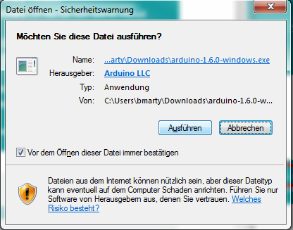</td><td>
                    Bestätige eine allfällige Sicherheitsbestätigung und erlaube der Arduino
                    Software sich auf deinem System zu installieren.
                </td></tr>
                <tr><td></td><td>
                    Stimme den gegebenen Lizenzbestimmungen zu...
                </td></tr>
                <tr><td>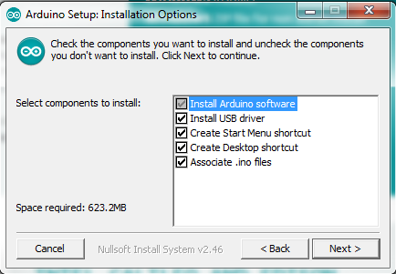</td><td>
                    Wähle alle verfügbaren components zur Installation und fahre mit weiter fort.
                </td></tr>
                <tr><td>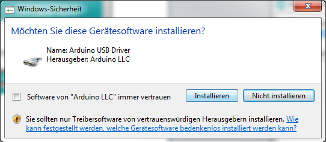</td><td>
                    Nach der Installation der IDE wird Arduino seinen USB-Treiber installieren.
                    Dieser muss installiert werden, um die Serielle Kommunikation von Gerät und
                    PC zu ermöglichen.
                </td></tr>
                <tr><td>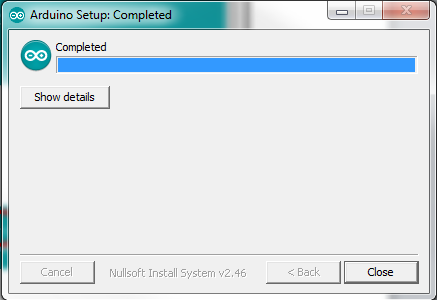</td><td>
                    Warten bis der Installationsvorgang abgeschlossen ist.
                </td></tr>
                <tr><td>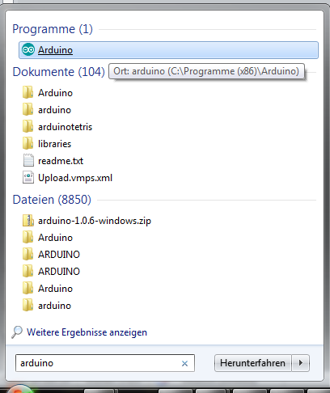</td><td>
                    Danach kann die Arduino IDE direkt über die Windows Suche nach "Arduino"
                    oder natürlich im Installationsverzeichnis gefunden und gestartet werden.
                </td></tr>
                <tr><td>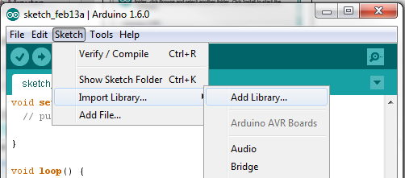</td><td>
                    Importiere die RKAG Matrix Bibliothek in der IDE via <em>Sketch &gt; Import Library &gt;
                    Add Library</em>
                </td></tr>
                <tr><td></td><td>
                    Wähle das Archiv mit der aktuellen Version der RKAG_Matrix aus und klick open.
                    Die IDE sollte das Archiv nun selbstständig importieren.
                </td></tr>
                <tr><td>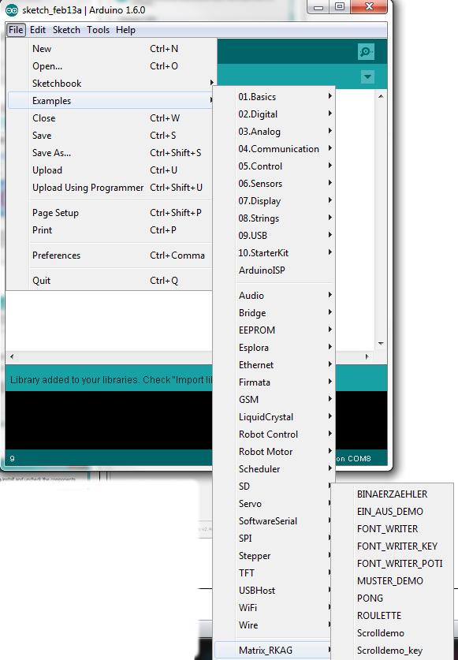</td><td>
                    Anschliessend können die mitgelieferten Beispiele direkt in der IDE geladen werden, um
                    Testprogramme auszuprobieren oder eine Vorlage für ein Projekt zu haben. Ein einfaches
                    Beispiel, der Binärzähler wird auch {{#link-to 'software-examples'}}hier{{/link-to}}
                    noch ausführlicher erklärt.
                </td></tr>
            </tbody>
        </table>
    </script>


    
    <script type="text/x-handlebars" id="software-examples">
        <h1>Software - Beispiele</h1>
        <p>
            Einige funktionierende Softwarebeispiele finden sich unter anderem auch im
            Ordner der Bibliothek und können von der Arduino-IDE direkt über <em>Examples</em>
            geladen werden. Die dort gespeicherten Vorlagen können importiert und bearbeitet
            werden, um einige einfache Aufgabe mit der Matrix auszuführen.
        </p>
        <h3>Binärzähler</h3>
        <p>
            Der Binärzähler ist eine sehr einfach Beispielsanwendung der Matrix. Dabei wird
            lediglich die Matrix initialisiert, ein Zähler hochgezählt und der entsprechende
            Wert auf einer Zeile in der Matrix ausgegeben.
        </p>
        <p>
            Dieses kleine Projekt setzt voraus, dass die RKAG-Matrix Bibliothek bereits wie in 
            {{#link-to 'software-installation'}}"Installation"{{/link-to}} beschrieben installiert
            ist, und korrekt importiert werden kann.
        </p>
        <p>
            Als erstes erstellen wir uns also einen neuen Arduino Sketch und importieren die Bibliotheken,
            die wir zur Verwendung der Matrix Bibliothek benötigen. Dazu zählen <strong>SPI.h</strong> und
            <strong>Wire.h</strong> für die Serielle Kommunikation per SPI und I2C auf dem Print, so wie die 
            Matix Bibliothek <strong>Matrix_RKAG</strong> selbst.
            <pre><code class="c">
#include &lt;Matrix_RKAG.h&gt;
#include &lt;SPI.h&gt;
#include &lt;Wire.h&gt;            
            </code></pre>
        </p>
        <p>&nbsp;</p>
        <p>
            Als nächstes definieren wir eine globale Variable, die wir später als Zähler verwenden werden.
            Wir nennen die Variable in diesem fall <strong>meinZaehler</strong>. Da es sich dabei um eine
            Zahl handelt, verwenden wir den Datentyp <strong>int</strong> (integer). Unter Arduino speichert
            dieser Datentyp eine 16bit lange Zahl, was einem Werebereich von -32'768 bis 32'767 entspricht.
            Den Ausgangswert des Zählers setzen wir auf 0, um ihn von 0 hochzählen zu lassen.
            <pre><code class="c">
int meinZaehler = 0;
            </code></pre>
        </p>
        <p>&nbsp;</p>
        <p>
            Da wir nun unserer Bibliotheken eingebunden und unsere Zählervariable bereit haben, können wir
            damit beginnen die eigentliche Funktion des Programms zu programmieren. In einem Arduino Sketch
            (Programm) gibt es standardmässig zwei Funktionen, <strong>setup()</strong> und <strong>loop()</strong>.
            Die Funktion <strong>setup()</strong> wird einmal am Anfang des Programms aufgerufen, also werden
            wir hier unsere Matrix initialisieren. <strong>matrix.init();</strong> muss immer vor der Verwendung der
            Matrix Funktionen aufgerufen, um das Gerät zu initialisieren.
            <pre><code class="c">
void setup() {
    matrix.init();
}
            </code></pre>
        </p>
        <p>&nbsp;</p>
        <p>
            Nach dem Setup unseres Programmes, kommen wir zum loop. Dieser wird immer wieder ausgeführt, solange
            das Programm läuft. In der <strong>loop()</strong> Funktion müssen wird nun also unseren Zähler 
            hochzählen, prüfen ob sein Wert gültig ist, das Ergebnis anzeigen und danach ein wenig waren, damit
            der Zählerfortschritt von blossem Auge zu erkennen ist.
            <pre><code class="c">
void loop() {
    meinZaehler = meinZaehler + 1;

    if (meinZaehler > 255) {
        meinZaehler = 0;
    }

    matrix.write(meinZaehler, 0x00, 0x00, 0x00, 0x00, 0x00, 0x00, 0x00); 

    delay(1000);
}
            </code></pre>
        </p>
        <p>
            Zuerst wird hier der Zähler <em>inkrementiert</em>, also eins nach oben gezählt. Durch
            <strong>meinZaehler = meinZaehler + 1;</strong> wird der Variable <strong>meinZaehler</strong>
            der eigene Wert plus eins zugeweiesen. Diesen Schritt könnte man auch mit <strong>meinZaehler++;</strong>
            abkürzen, was in C eine <em>direkte Inkrementation</em> ist.
        </p>
        <p>
            Als nächstes überprüfen wir, ob der Wert unseres Zählers grösser als 255 ist. Die Matrix besteht
            nur aus 8 LEDs und kann folglich nur einen Wert mit maximal 8 bit (2^8 = 256) darstellen. Um zu
            verhindern, dass unser Zähler in einem Bereich weiterzählt, der von der Matrix gar nicht mehr angezeigt
            werden kann, wird er auf 0 zurückgesetzt, wenn er grösser als 255 ist.
        </p>
        <p>
            Im dritten Schritt wird der Wert auf der Matrix ausgegeben. Die <strong>matrix.write</strong> Funktion
            verlangt gemäss Dokumentation 8 Zahlen als Eingabe, die dann von oben nach Unten reihenweise auf der
            LED-Matrix angezeigt werden. Wir geben in unserem Fall den Wert der Variable <strong>meinZaehler</strong>
            auf der ersten Zeile aus und setzen die anderen Zeilen auf 0, was alle LEDs ausschaltet.
        </p>
        <p>
            Zu guter letzt verwenden wir die <strong>delay()</strong> Funktion, mit der wir eine gewisse Zeit in
            Millisekunden warten können. In diesem Beispiel warten wir run 1000ms (1 Sekunde), bis das Programm 
            weiter läuft. Da das Programm nun am Ende von <strong>loop()</strong> angelangt ist, wird es wieder
            von oben anfangen und den Zähler erneut um eins erhöhen...
        </p>
        <p>&nbsp;</p>
        <p>
            Unser Fertiges Programm sieht also wie folgt aus:
            <pre><code class="c">
#include &lt;Matrix_RKAG.h&gt;
#include &lt;SPI.h&gt;
#include &lt;Wire.h&gt;

int meinZaehler = 0;

void setup() {
    matrix.init();
}

void loop() {
    meinZaehler = meinZaehler + 1;

    if (meinZaehler > 255) {
        meinZaehler = 0;
    }

    matrix.write(meinZaehler, 0x00, 0x00, 0x00, 0x00, 0x00, 0x00, 0x00); 

    delay(1000);
}
            </code></pre>
        </p>
    </script>


    
    <script type="text/x-handlebars" id="software-documentation">
        <h1>Software Dokumentation</h1>
        <p>
            Die Software Dokumentation ist in der aktuellen Version noch nicht vorhanden.<br />
            Alle wichtigen Funktionen der Software sind in den Beispielen erläutert.
        </p>
        <p>
            Sämtliche verfügbaren Methoden sind im Header-File der API abgebildet:
            <pre><code class="c">
void init();

int read_io();

void write(char byte1, char byte2, char byte3, char byte4, char byte5, char byte6, char byte7, char byte8);

void write_array(char matrix[]);

void font_write(int numb);

void clear();

void sample(int numb);

void pcf_write(int data);

int pcf_read();

int taste_1;
int taste_2;
int taste_3;

int potentiometer_0;
            </code></pre>
        </p>
        <p>&nbsp;</p>
        <p>
            Aufgerufen werden können diese beispielsweise via <em>matrix.init();</em> für Methoden
            oder <em>matrix.taste_1</em> um einen Tasten-/Potentiometerwert zu erhalten.
        </p>
    </script>

</body>
</html>